Next: Damage initiation models Up: Materials Previous: Elastic anisotropy with user Contents
Other material laws can be defined by the user by means of the
*USER MATERIAL keyword card. More information
and examples can be found in section
A user material card requires the coding of a user material subroutine, either of the CalculiX type or the Abaqus type.
For a user material routine of the CalculiX type the routine umat_user.f can be taken as example. The input primarily exists of the mechanical Lagrange strain tensor at the beginning and end of the increment, requested output is the Piola-Kirchhoff stress tensor of the second kind and the derivative of the Piola-Kirchhoff stress of the second kind with respect to the mechanical Lagrange strain tensor, both at the end of the increment. Details of other input fields is given in the section referenced above.
For a user material routine of the Abaqus type there are two possibilities:
either the user wants to apply the routine to linear geometric calculations
only. Then, the kind of strain and stress going in or out of the routine is
not important and the previous paragraph applies. However, if the user would
like to apply the routine to geometrically nonlinear calculations, the strain
entering the routine is the corotational mechanical logarithmic strain and the required
stress is the corotational Cauchy stress. So CalculiX has to perform some
conversions before and after calling the Abaqus user material routine. For a
prototype example of a Abaqus user material routine the user is referred to
umat.f, for limitations on the use of the Abaqus interface fields section
Here, some information is given on how the fields used in CalculiX (mechanical
Lagrange strain and Piola-Kirchhoff stress of the second kind) are converted
into the fields required by Abaqus (corotational mechanical logarithmic strain and
corotational Cauchy stress) and vice versa. The conversions are coded in
umat_abaqusnl.f. The fields
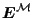 ,
,
 are available at the start of the routine (the meaning of
these variables is explained in the following paragraphs).
are available at the start of the routine (the meaning of
these variables is explained in the following paragraphs).
The mechanical logarithmic strain satisfies
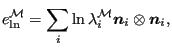 |
(506) |
where
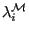 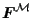
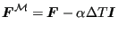 |
(507) |
for isotropic expansion. This is a first order approximation of a
multiplicative decomposition of the total deformation gradient into a
mechanical and thermal component in the form
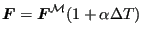 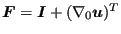 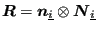 of the motion in material coordinates into spatial
coordinates
of the motion in material coordinates into spatial
coordinates
 :
:
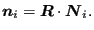 |
(508) |
It is a two-point tensor with one leg in the material frame of reference and
one leg in the spatial frame of reference. The corotational mechanical
logarithmic strain then amounts to (recall that
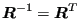 is
orthogonal, i.e.
is
orthogonal, i.e.
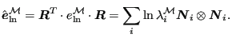 |
(509) |
can be obtained from the eigenvalues of the
mechanical Lagrange
tensor
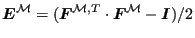 .
.
The Cauchy tensor satisfies
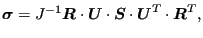 |
(510) |
and consequently the corotational Cauchy tensor amounts to
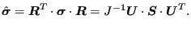 |
(511) |
Here, 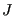 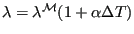 is the Piola-Kirchhoff
stress of the second kind and
is the Piola-Kirchhoff
stress of the second kind and
 is the right-stretch
tensor. The latter is the square root of the Cauchy-Green tensor
is the right-stretch
tensor. The latter is the square root of the Cauchy-Green tensor
 and therefore it can also be derived from the Lagrange
tensor. However, in routine umat_abaqusnl.f the mechanical Lagrange tensor is
available and not the total one. So a relationship is needed between the
total right-stretch tensor and the mechanical right-stretch tensor. Since
and therefore it can also be derived from the Lagrange
tensor. However, in routine umat_abaqusnl.f the mechanical Lagrange tensor is
available and not the total one. So a relationship is needed between the
total right-stretch tensor and the mechanical right-stretch tensor. Since
 has the same eigenvalues as
has the same eigenvalues as
 and the
multiplicative decomposition of the deformation gradient in a mechanical and
thermal deformation gradient leads to
and the
multiplicative decomposition of the deformation gradient in a mechanical and
thermal deformation gradient leads to
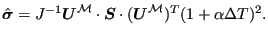 |
(512) |
The latter equation assumes that the thermal expansion is isotropic. In
routine umat_abaqusnl.f
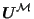 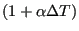 is known,
is known,
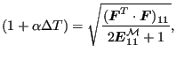 |
(513) |
where the index 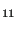
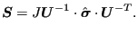 |
(514) |
Now,
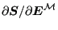 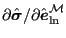
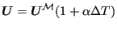
from which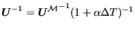
.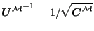
.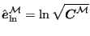
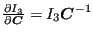
and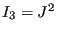
, from which
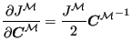 |
(515) |
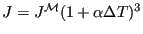
.and writing the expression for the Piola-Kirchhoff stress of the second kind in a rectangular coordinate system:
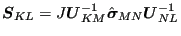 |
(516) |
straightforward differentation yields:
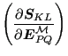 |
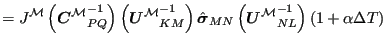 |
|
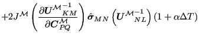 |
||
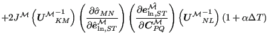 |
||
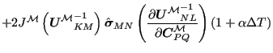 |
(517) |
The first term in brackets on the second line, the third term in brackets on the third
line and the second term in brackets on the fourth line are special cases of
the derivative of a function of
 w.r.t
w.r.t
 . Expressions for such a differentation based on the eigenvalues and
structural tensors of
. Expressions for such a differentation based on the eigenvalues and
structural tensors of
 were derived by Itskov [42]
and are summarized in the Appendix of [25]. The second term
in brackets on the third line is the tangent returned by the Abaqus UMAT routine.
were derived by Itskov [42]
and are summarized in the Appendix of [25]. The second term
in brackets on the third line is the tangent returned by the Abaqus UMAT routine.
Notice that the above equation is symmetric in (KL) and (PQ), i.e. switching K
and L and/or P and Q. In particular,
switching K and L in the second term leads to the fourth term. This symmetry
is to be expected, since
 and
are symmetric tensors. However, it is not clear whether the symmetry obtained
by replacing KL by PQ is preserved. Therefore, in CalculiX a symmetrization of
the resulting tangent matrix is performed, leading to 21 constants instead of
36 constants. The above procedure was implemented in umat_abaqusnl.f and
umat_abaqusnl_total.f. It is used for those material models, which were only
formulated for small strains, such as isotropic plasticity for an elastically
orthotropic material, Johnson-Cook plasticity and Mohr-Coulomb plasticity.
and
are symmetric tensors. However, it is not clear whether the symmetry obtained
by replacing KL by PQ is preserved. Therefore, in CalculiX a symmetrization of
the resulting tangent matrix is performed, leading to 21 constants instead of
36 constants. The above procedure was implemented in umat_abaqusnl.f and
umat_abaqusnl_total.f. It is used for those material models, which were only
formulated for small strains, such as isotropic plasticity for an elastically
orthotropic material, Johnson-Cook plasticity and Mohr-Coulomb plasticity.